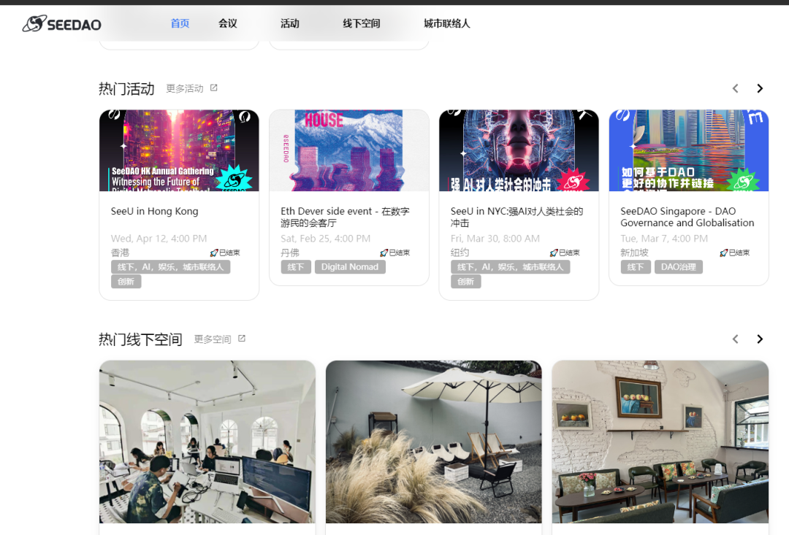

定位于“服务全球数字游民”的网站
SeeU.Network
今日正式上线
🎉🎉🎉
在SeeDAO第三季节点共识大会上，投票通过的“SIP-90：“全球DAO场”战略项目提案”中，明确了需要为“城市联络人”、“线下空间合作”、“DAO Conference”等项目开发技术基础设施。这是一次重要的里程碑，SeeU.Network 将成为 SeeDAO 全球网络基础设施的重要成员，将基于 SeeDAO 操作系统，为 SeeDAO 全球网络的各个项目提供技术基础设施支撑。
网站现已经上线的功能，包括展示 SeeDAO 全球网络在各个城市的活动、大会、线下空间，以及 SeeDAO SGN 能够获得的各种福利。无论你是活动参与者、组织者，还是对全球范围内的 DAO 活动感兴趣的社区成员，都能在这里找到自己需要的信息和资源。
全球十城联动，SeeDAO实验期城市联络人计划回顾
在未来的版本中，我们会上线更多令人期待的功能，比如支持线上预定、在线购买和数字货币支付，使得购买和预定过程更加便捷，安全。同时，IRL 线下活动信息将会上链，这将使我们的社区活动更加透明，让所有的信息都有迹可寻。此外，我们还将上线 SeeDAO 社区成员的会员系统，让社区成员之间的互动更加紧密。而峰会的各种 side event 功能，将让我们的活动更加丰富，多元。
我们热切期待全球各个城市的线下空间能够入驻SeeU.Network。我们希望 SeeU.Network 能成为各个城市的网络化空间，为全球范围内的城市提供一个共享资源，共建城市绿洲的平台。具体的入驻信息和申请方法，请参见我们的文章
《链接全球，共建城市绿洲 | 全球DAO场计划》👇🏻

这个特殊的时刻，我们想要感谢每一位在过去一路陪伴我们的人，你们的支持让我们有动力去开创新的未来。请继续关注我们，更多精彩内容即将上线！让我们一起，开启全新的旅程，探索 SeeU.Network 的无限可能性！
内容来源 | 全球DAO场项目
排版 | T1NG
审核 | Ines